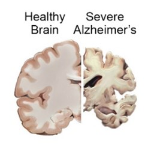
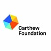
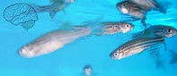

Jai Matthews, 2021
Published by Adelaide University in September of 2020, an article entitled “Breakthrough in Alzheimer’s research” briefly details Associate Professor Michael Lardelli’s work on Alzheimer’s disease. The article attributes some of the praise to Lindsay Carthew, a former student of The University of Adelaide.
The article has mentions of a variety of terms that, in order to provide context, are listed below alongside their definitions.
| Alzheimer’s Disease. |  | Known also as senile dementia, Alzheimer’s disease is a slow and progressive disease through which brain cells and connections slowly die, destroying brain functions and erasing memories (Google, 2021). |
| Associate Professor Michael Lardelli | An associate professor working at the University of Adelaide focussing on Molecular and Biomedical science. Namely, Alzheimer’s disease. | |
| The Carthew Foundation. |  | A charity started in 2011 recognised by the ACNC as being medium-sized and directed by Paul Teisseire. Lindsay Carthew, mentioned in the article, is a University of Adelaide alumni and trustee of the Carthew foundation (ACNC, 2021). |
| Alzheimer’s Disease Genetics Laboratory |  | A biotechnology company, part of Adelaide university. |
Creation of the Article
The article is fairly limited in terms of who is credited with the work. In fact, mentioned in the article are only the two people already listed above in the glossary of terms.
These two are Michael Lardelli, the lead researcher behind the program, and Lindsay Carthew, University of Adelaide alumni and trustee of the Carthew foundation, a charity which supports some of the research being done.
Being a naturally short article, not much is mentioned about how the research has been conducted. It mentions a “team” of researchers, indicating a high degree of collaboration behind the scenes. Though it can be assumed that the research team would follow certain norms regarding collaboration. Whilst there is little tangible information about these norms, in a blog written by Eugene Borgida et. al., they establish the important components of psychological collaboration to include sharing of data, establishment or authorship, mentoring & clear division of tasks to name a few.
As already mentioned, the article credited some of the funding to the Carthew Foundation “Thanks to […] long term donors, the Carthew Foundation.” According to the Australian Charities and Non-Profits commission, the Foundation is a “medium-sized” group created in 2011 that has given a total of $379,000 to various people & groups throughout their history. All of which has come from “Income Investments”.
Development
Whilst this is an article that focusses on Alzheimer’s disease, an inherently psychological field, it’s not entirely psychology.
Which isn’t to say much, most scientific research doesn’t just apply to the one field. Alzheimer’s disease for example crosses over into neuroscience given the research pertains to the development of the brain. And being about mitochondria, the research enters the field of biology and the included zebrafish enters a more specific marine biology.
Of course, these fields could branch off of this research very easily to create new scientific endeavours. For example, the research involving zebrafish could spark more research that specifically focus on the neuroscience of zebrafish.
Influence: Past & Future
Alzheimer’s disease is an utterly horrific thing to watch people suffer through, especially your loved ones. The feeling of someone you’ve known your whole life not even being able to remember who you are must be unbearable. Therefore, it makes sense that people, perhaps those who have suffered through this curse, have been researching unceasingly this disease and trying to prevent, or slow, it. The inspiration for the research completed by the University of Adelaide and, by extension, all across the world comes from a place of a sheer need to see this painful, currently uncurable, disease come to an end.
Whilst one cannot see the future, the research into Alzheimer’s disease will likely follow a similar trajectory to other diseases we’ve cured (if we’re lucky). Like how previous research has encouraged Lardelli’s, his research shall spawn and create new ideas to research and open up new questions for scientists in the field to answer. For example, his team has identified there’s a crucial role in the mitochondria in developing Alzheimer’s, that’s just one avenue that is yet to be explored. With time, resources and, most importantly, ingenuity, Alzheimer’s diseases will likely become treatable, preventable and, perhaps even curable.
Conclusion
In conclusion, the article represents one stage in the path that is the research of Alzheimer’s disease. It is the stage we are up to now, but like many fields of the past, we are destined to progress and get closer to ending the scourge that is this disease.
Bibliography
- (No Author) 2021, Associate Professor Michael Lardelli, University Staff Directory (accessed 8.11.21) [https://www.adelaide.edu.au/directory/michael.lardelli#]
- a1223736, 2020, Breakthrough in Alzheimer’s Research, University of Adelaide (accessed 8.11.21) [https://www.adelaide.edu.au/alumni/news/list/2020/09/29/breakthrough-in-alzheimers-research]
- ACNC 2021, The Trustee for Carthew Family Charity Trust, Australian Charities and Non-Profits Commision (accessed 8.11.21) [https://www.acnc.gov.au/charity/250d745e585030bbafe9c74419b969ee#overview]
- Mayo Clinic Staff, n.d., Alzheimer’s Disease, Mayo Clinic (accessed 8.11.21) [https://www.mayoclinic.org/diseases-conditions/alzheimers-disease/symptoms-causes/syc-20350447?utm_source=Google&utm_medium=abstract&utm_content=Alzheimers-disease&utm_campaign=Knowledge-panel]
- Zweigenhaft R. and Borgida E., 2017, Collaboration in Psychological Science, Part II, Psychology Today (accessed 8.11.21) [https://www.psychologytoday.com/au/blog/adventures-in-psychology/201709/collaboration-in-psychological-science-part-ii]